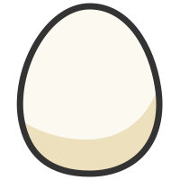
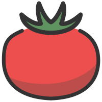
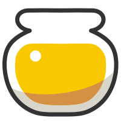

操作を試せる設計モック。レシピは実データ、個体の取得量・発動率は設定例です。大成功の数式は別途仕様化します。
料理エナジープランナー
料理・目標
1食103個：エッグ24・トマト29・ミツ32・カボチャ18。通常週・フィールド0%・キャンプなしの表示例。
不足を見ながら、担当の日数と備蓄を調整します。食材・鍋・料理チャンスは、どこから設定しても自動で集計されます。
食材の必要量・不足と備蓄
担当と日数を決めながら、備蓄を同じ表で調整できます。未入力の備蓄・日数は0として集計します。
| 食材 | 必要 | 取得期待量 | 備蓄を入力 | 不足／余り |
|---|---|---|---|---|
 とくせんエッグ | ||||
 あんみんトマト | ||||
 あまいミツ | ||||
| ずっしりカボチャ |
不足は「必要 − 取得期待量 − 備蓄」。マイナスなら余りとして表示します。
食材担当
追加しただけでは日数は未入力です。編成日数を入れると食材の不足が減ります。
鍋拡張の運用
1食で何回発動させるかを決め、必要な回数を担当の発動期待値と比較します。
料理に必要な最低回数（自動）
レシピ103個に届く回数を切り上げ。モックの日曜容量は基本鍋の2倍とする設定例です。
発動期待値との比較です。各食での発動時点・持越し・上限を含む正式な判定は #77 で定義します。
料理チャンスの運用
運用に必要な回数を供給できるよう、担当と編成日数を調整します。
担当の供給期待値
供給期待値の平均
目標の1食あたり
発動回数の平均であり、大成功確率ではありません。
スキルレベルが異なる担当は発動回数だけで同一視しません。大成功回数・平均確率と再充填の期間必要回数は #79 の仕様確定後に計算します。
追加投入の条件
空いた鍋を満たせる食材がある前提です。